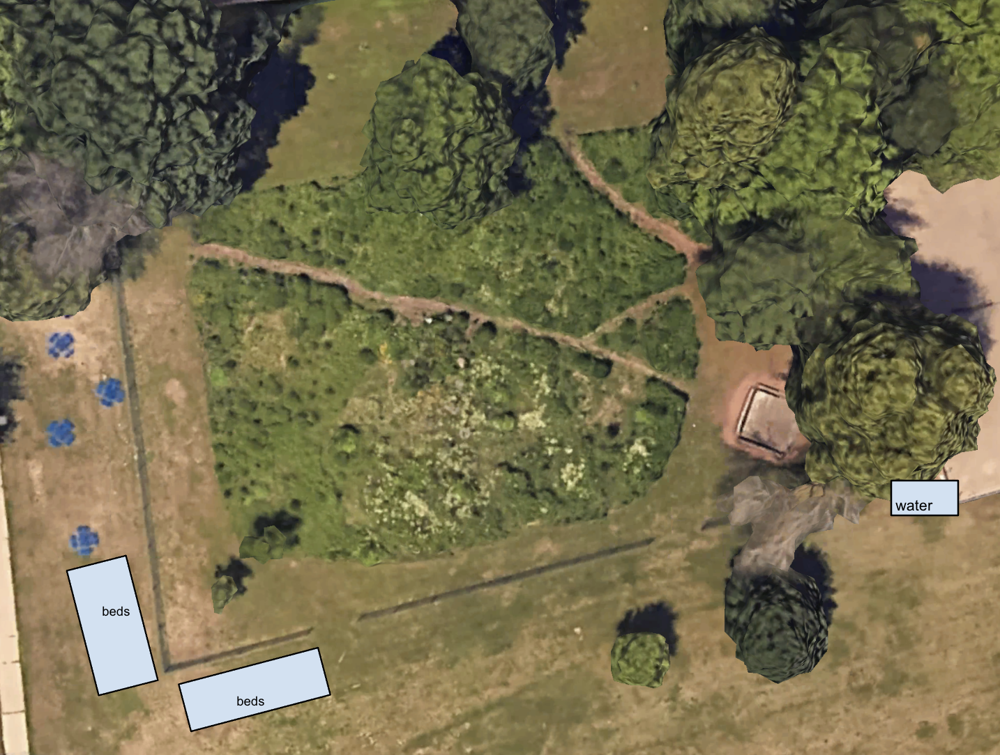

Food Sustainability

Steps of the project:
Submitted project proposals and met with principal of local middle school

Compiled supplies and constructed garden with students, giving hands-on lesson in food sustainability

Harvested and cooked crops with students in school culinary class

Project ongoing with plans to maintain and continue garden for future years